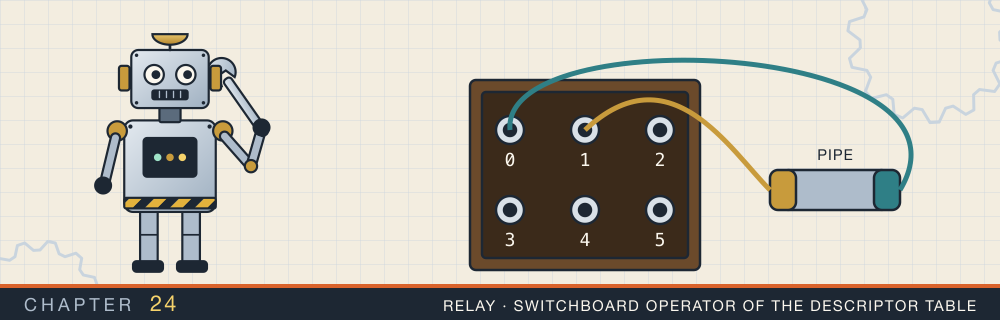
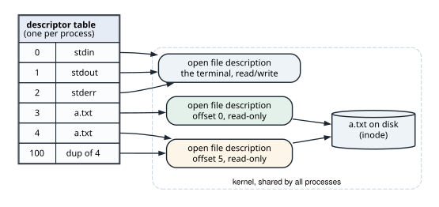
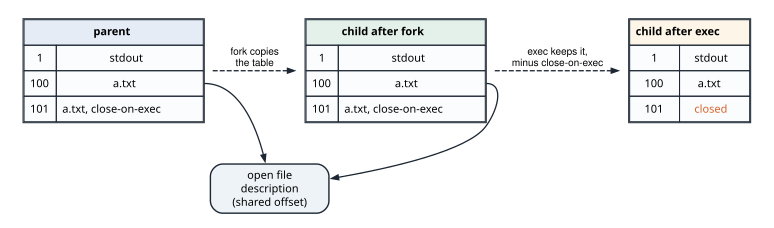
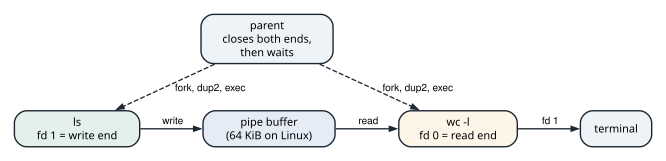

File descriptors, fork, and pipes
This chapter covers
- The three-level kernel descriptor architecture: per-process descriptor tables, open file descriptions, and the lowest-free-descriptor allocation rule
- Descriptor inheritance across
forkandexec, and async-signal-safety constraints in multithreaded processes - Kernel pipes: ring-buffer semantics, blocking rules,
SIGPIPE/EPIPE, and end-of-file termination conditions - Constructing a two-stage shell pipeline (
ls | wc -l) directly viapipe,fork,dup2, andexecvp - Descriptor leaks that leave a pipe write end open and induce indefinite reader blocking
- Close-on-exec (
FD_CLOEXEC/O_CLOEXEC) semantics and atomic descriptor creation flags
Every POSIX process interacts with files, sockets, and pipes through a kernel-managed indirection layer: small non-negative integers called file descriptors index a per-process table whose entries reference shared kernel-level open file descriptions. Process creation (fork) duplicates that table by reference rather than by value, while program replacement (exec) preserves every entry not marked close-on-exec. Unix pipelines exploit the narrow window between fork and exec to rewire standard input and standard output onto kernel pipe descriptors, making descriptor lifecycle management critical to both process termination and security isolation.
The reference program fd_table exercises these kernel invariants directly through libc bindings: verifying lowest-free-descriptor allocation, constructing ls | wc -l without a shell, reproducing the indefinite hang caused by an unclosed pipe write end, and testing close-on-exec propagation across execvp.
24.1 The descriptor table
Each process owns a file descriptor table managed by the kernel, mapping non-negative integer indices to kernel I/O objects. By convention, process initialization populates the first three slots: 0 for standard input (stdin), 1 for standard output (stdout), and 2 for standard error (stderr).
A descriptor table entry does not reference an inode directly. Instead, it points to an open file description (a kernel struct file on Linux) allocated by a single open, pipe, or socket system call. The open file description stores per-opening state, including the current byte offset, access mode (O_RDONLY, O_WRONLY, O_RDWR), and file status flags such as O_APPEND or O_NONBLOCK. That kernel object in turn references the underlying inode or socket endpoint (Figure 24.1).

Three fundamental POSIX invariants follow directly from this three-level indirection:
- Independent
opencalls allocate distinct open file descriptions. Each description maintains an independent file offset; advancing the offset through descriptor 3 has no effect on descriptor 4. - Duplicated descriptors alias the same open file description.
dup,dup2, andfcntl(..., F_DUPFD, ...)install a new descriptor table entry referencing an existing open file description. Anyread,write, orlseekthrough either descriptor advances the shared offset. - Allocation follows the lowest-free-number invariant.
openanddupalways assign the smallest non-negative integer not currently active in the process’s descriptor table. Closing descriptor 3 makes 3 the immediate return value of the next allocation.
An open file description is reference-counted across all descriptor tables in the system. Calling close removes a single descriptor table entry and decrements the description’s reference count; the kernel deallocates the description (and tears down the underlying pipe endpoint or network socket) only when that reference count reaches zero.
The per-process descriptor table size is bounded by the RLIMIT_NOFILE resource limit. A process that leaks descriptors eventually exhausts this table, causing subsequent open, accept, or socket calls to fail with EMFILE (“Too many open files”). In Rust, RAII wrappers such as std::fs::File, std::net::TcpStream, and std::os::fd::OwnedFd invoke close deterministically inside Drop, eliminating most accidental descriptor leaks.
24.1.1 Watching the numbers
On Linux and macOS, the pseudo-directory /dev/fd enumerates the calling process’s currently active descriptor numbers. open_fds reads and parses these entries:
use std::{
ffi::CString,
fs::{self, File},
io::{self, Read, Write},
os::fd::{AsRawFd, FromRawFd, OwnedFd, RawFd},
path::Path,
thread,
time::Duration,
};
/// The descriptors open in this process, read from `/dev/fd`.
///
/// Reading the directory opens one more descriptor, which is in the list.
fn open_fds() -> io::Result<Vec<RawFd>> {
let mut fds: Vec<RawFd> = fs::read_dir("/dev/fd")?
.filter_map(Result::ok)
.filter_map(|entry| entry.file_name().to_str()?.parse().ok())
.collect();
fds.sort_unstable();
Ok(fds)
}Each entry name corresponds to an integer descriptor index. The second filter_map retains entries that parse as i32. Because enumerating /dev/fd itself requires opening a directory descriptor, that transient descriptor appears in the returned list.
main opens a file twice, closes the lower-numbered descriptor, and opens the file a third time to verify slot reuse:
fn main() -> io::Result<()> {
// ...
println!("open at start: {:?}", open_fds()?);
let first = File::open(&path)?;
let second = File::open(&path)?;
println!(
"opened two files: fd {} and fd {}",
first.as_raw_fd(),
second.as_raw_fd()
);
let freed = first.as_raw_fd();
drop(first);
let third = File::open(&path)?;
println!(
"closed fd {freed}, opened another: fd {}\n",
third.as_raw_fd()
);
// ...
}The observed output confirms both allocation invariants:
open at start: [0, 1, 2, 3]
opened two files: fd 3 and fd 4
closed fd 3, opened another: fd 3
At startup, descriptors 0, 1, and 2 refer to the standard streams and descriptor 3 is the directory descriptor opened by fs::read_dir. Dropping the directory iterator closes descriptor 3, allowing the first File::open to acquire 3 and the second to acquire 4. Dropping the first File frees slot 3, which the third File::open immediately reclaims.
24.2 fork and exec
Unix separates process creation from executable loading into two orthogonal primitives:
forkclones the calling process, producing a child process with a copy-on-write duplicate of the parent’s virtual address space (Section 23.2) and a shallow copy of the parent’s descriptor table.forkreturns twice: in the parent it returns the child’s process identifier (pid_t), and in the child it returns0.execreplaces the calling process’s address space with a new executable image while preserving its process identifier and descriptor table. Every descriptor entry whose per-descriptor close-on-exec (FD_CLOEXEC) flag is clear remains open in the new program; entries withFD_CLOEXECset are closed atomically by the kernel during image replacement.
Because fork performs a shallow copy of the descriptor table (Figure 24.2), corresponding entries in parent and child reference the identical open file descriptions and increment their kernel reference counts. Parent and child therefore share file offsets on inherited descriptors. After exec, the replacement program inherits standard streams at indices 0, 1, and 2 solely because those entries were positioned there prior to exec.

fork copies the table, and both copies point at the same descriptions. exec keeps the table and closes the close-on-exec entries.Command shells construct I/O redirections and pipelines in the interval between fork and exec. Within the child process, the shell binds pipe endpoints or redirected files onto descriptors 0 and 1 via dup2, then invokes exec. The newly loaded executable reads descriptor 0 and writes descriptor 1 transparently, decoupled from whether those indices reference a terminal, regular file, or kernel pipe.
24.2.1 What the child may do before exec
In a multithreaded process, fork duplicates only the single thread that invoked it. All other threads vanish instantaneously in the child’s address space, leaving any mutexes they held (such as the global heap allocator lock) permanently locked with no owning thread to release them. Calling a lock-acquiring library function such as malloc inside the child before exec can therefore deadlock immediately.
POSIX restricts a multithreaded process’s post-fork, pre-exec child strictly to async-signal-safe system calls: primitives that acquire no user-space locks, including dup2, close, execvp, and _exit. Because Rust’s test harness executes tests concurrently across a thread pool, fd_table adheres strictly to this invariant by performing all heap allocations prior to fork.
The Program helper constructs null-terminated C strings in advance:
/// A program name and its arguments, as C strings.
struct Program(Vec<CString>);
impl Program {
fn new(args: &[&str]) -> Self {
Self(
args.iter()
.map(|arg| CString::new(*arg).expect("no NUL byte in an argument"))
.collect(),
)
}
/// The null-terminated pointer array `execvp` takes. It borrows `self`.
fn argv(&self) -> Vec<*const libc::c_char> {
self.0
.iter()
.map(|arg| arg.as_ptr())
.chain(std::iter::once(std::ptr::null()))
.collect()
}
}execvp expects a null-terminated array of *const c_char pointers. argv builds this pointer vector from the owned CString buffers; the pointers remain valid for the lifetime of Program.
The process-spawning primitive binds three POSIX calls:
unsafe extern "C" {
fn fork() -> pid_t; // child's id in the parent, 0 in the child, -1 on error
fn dup2(src: c_int, dst: c_int) -> c_int; // make dst refer to src's open file
fn execvp(
file: *const c_char, // program name, searched in PATH
argv: *const *const c_char, // arguments, ending with a null pointer
) -> c_int; // returns only on failure
}spawn constructs argv before calling fork, then redirects standard streams and replaces the child image:
/// Start `program` in a child process. `stdin` and `stdout`, when given,
/// become the child's descriptors 0 and 1. Returns the child's process id.
fn spawn(
program: &Program,
stdin: Option<RawFd>,
stdout: Option<RawFd>,
) -> io::Result<libc::pid_t> {
// Allocate before `fork`: the child may only make async-signal-safe calls.
let argv = program.argv();
// SAFETY: the child below calls only dup2, execvp, and _exit.
let pid = check(unsafe { libc::fork() })?;
if pid > 0 {
return Ok(pid);
}
// SAFETY: this is the child, a copy of the parent with one thread. dup2 copies
// a descriptor without its close-on-exec flag; execvp replaces the program.
unsafe {
if let Some(fd) = stdin {
libc::dup2(fd, 0);
}
if let Some(fd) = stdout {
libc::dup2(fd, 1);
}
libc::execvp(argv[0], argv.as_ptr());
libc::_exit(127)
}
}Because argv is allocated before fork, the child executes zero heap allocations. Inside the child, dup2(fd, 1) atomically closes any existing descriptor at slot 1 and points slot 1 at the open file description of fd. execvp searches PATH and does not return on success. On failure, the child terminates immediately via _exit(127) (the conventional shell exit code for “command not found”), bypassing user-space atexit handlers and preventing the child from returning into parent control flow.
The parent reaps terminated children with waitpid:
unsafe extern "C" {
fn waitpid(
pid: pid_t, // the child to wait for
status: *mut c_int, // filled in; WEXITSTATUS(status) is the exit code
options: c_int, // 0 to wait, WNOHANG to return at once
) -> pid_t; // the child's id, 0 if WNOHANG and still running, or -1
}/// Wait for the child `pid` to exit, and return its exit status.
fn wait(pid: libc::pid_t) -> io::Result<i32> {
let mut status = 0;
// SAFETY: `waitpid` writes the status into the integer it is given.
check(unsafe { libc::waitpid(pid, &mut status, 0) })?;
Ok(libc::WEXITSTATUS(status))
}
/// Whether the child `pid` has exited, without waiting for it.
fn has_exited(pid: libc::pid_t) -> io::Result<bool> {
let mut status = 0;
// SAFETY: as in `wait`; WNOHANG returns 0 at once if the child is running.
let result = check(unsafe { libc::waitpid(pid, &mut status, libc::WNOHANG) })?;
Ok(result == pid)
}An exited child remains in the kernel process table as a zombie holding its exit status until its parent reaps it via waitpid. Passing WNOHANG performs a non-blocking poll, returning 0 if the child is still executing.
24.3 Pipes
A pipe is a unidirectional, in-kernel FIFO ring buffer exposed through a pair of descriptors: a read end and a write end. Bytes written to the write end are delivered in strict FIFO order from the read end. On Linux, the default pipe buffer capacity is 64 KiB (16 memory pages).
Pipeline flow control and termination are governed by four kernel blocking and error semantics:
readon an empty pipe blocks until at least one byte is written or all write ends close.readreturns0(end-of-file) if and only if the pipe buffer is empty and the kernel reference count for the write-end open file description has reached zero across all processes.writeto a full pipe blocks until a reader drains sufficient buffer space.writeto a pipe whose read-end reference count is zero fails immediately: the kernel deliversSIGPIPEto the writing process, or returns-1witherrno == EPIPEifSIGPIPEis ignored or masked.
A shell executes ls | wc -l through a five-step descriptor protocol (Figure 24.3):
- Invoke
pipeto allocate the read and write descriptors in the parent’s descriptor table. - Invoke
fork; in the first child, redirectstdout(descriptor 1) to the pipe write end withdup2and invokeexecvp("ls", ...). - Invoke
fork; in the second child, redirectstdin(descriptor 0) to the pipe read end withdup2and invokeexecvp("wc", ...). - Close both the read and write pipe descriptors in the parent process.
- Reap both child processes with
waitpid.

ls | wc -l after setup. Only ls holds the write end, and only wc holds the read end.Step 4 establishes the termination invariant: once the parent closes its pipe descriptors, ls’s descriptor 1 is the sole remaining reference to the pipe’s write end. When ls exits, the kernel closes its descriptor table, dropping the write-end reference count to zero; wc -l then observes read() == 0, prints its line count, and exits.
24.3.1 Building the pipeline
The low-level pipe and descriptor control interfaces operate on raw integer descriptors:
unsafe extern "C" {
fn pipe(fds: *mut c_int) -> c_int; // fills [read end, write end]; 0 or -1
fn fcntl(fd: c_int, cmd: c_int, ...) -> c_int; // F_SETFD sets flags; F_DUPFD copies
}pipe writes [read_fd, write_fd] into a two-element array, while fcntl is a variadic system call accepting a command code and optional argument. Wrapping both descriptors in OwnedFd ensures deterministic closure on drop, and setting FD_CLOEXEC prevents accidental inheritance:
/// Turn a C return value into an `io::Result`: -1 means `errno` holds the error.
fn check(result: libc::c_int) -> io::Result<libc::c_int> {
if result == -1 {
Err(io::Error::last_os_error())
} else {
Ok(result)
}
}
/// Set close-on-exec on `fd`, so a program started with `exec` does not get it.
fn set_cloexec(fd: RawFd) -> io::Result<()> {
// SAFETY: F_SETFD changes only the descriptor's flags.
check(unsafe { libc::fcntl(fd, libc::F_SETFD, libc::FD_CLOEXEC) })?;
Ok(())
}
/// A pipe as (read end, write end). Both ends are close-on-exec.
fn pipe() -> io::Result<(OwnedFd, OwnedFd)> {
let mut ends = [0; 2];
// SAFETY: `pipe` writes two new descriptors into the array.
check(unsafe { libc::pipe(ends.as_mut_ptr()) })?;
// SAFETY: both descriptors were just created, and nothing else owns them.
let (read_end, write_end) =
unsafe { (OwnedFd::from_raw_fd(ends[0]), OwnedFd::from_raw_fd(ends[1])) };
set_cloexec(read_end.as_raw_fd())?;
set_cloexec(write_end.as_raw_fd())?;
Ok((read_end, write_end))
}check converts the POSIX -1/errno convention into io::Result. Marking the original pipe descriptors with FD_CLOEXEC eliminates explicit close calls in each child prior to exec: because dup2 clears FD_CLOEXEC on the target slot, descriptors 0 and 1 survive execvp while the original pipe descriptors close automatically upon image replacement.
ls_wc implements the five-step pipeline directly:
/// `ls dir | wc -l`, built the way a shell builds it. `wc` writes to this
/// process's standard output.
fn ls_wc(dir: &Path) -> io::Result<()> {
let ls = Program::new(&["ls", dir.to_str().expect("UTF-8 path")]);
let wc = Program::new(&["wc", "-l"]);
let (read_end, write_end) = pipe()?;
let writer = spawn(&ls, None, Some(write_end.as_raw_fd()))?;
let reader = spawn(&wc, Some(read_end.as_raw_fd()), None)?;
drop(read_end);
drop(write_end);
wait(writer)?;
wait(reader)?;
Ok(())
}The explicit drop calls execute step 4 in the parent before waiting. Against a directory containing three files, the pipeline outputs:
ls fd_table_demo | wc -l
3
On Linux, GNU wc formats the count as 3 without leading whitespace.
24.3.2 A write end left open
Animation 24.1 contrasts the properly closed pipeline with a defective run that omits step 4.
reader_waits_for_the_write_end reproduces this liveness failure by spawning wc -l, writing two lines to the pipe, and delaying closure of the parent’s write descriptor for one second:
/// Start `wc -l` on a pipe, write two lines into it, and keep the write end
/// open for `hold`. Returns whether `wc` was still running when `hold` ended.
fn reader_waits_for_the_write_end(hold: Duration) -> io::Result<bool> {
let wc = Program::new(&["wc", "-l"]);
let (read_end, write_end) = pipe()?;
let reader = spawn(&wc, Some(read_end.as_raw_fd()), None)?;
drop(read_end);
let mut writer = File::from(write_end);
writer.write_all(b"one\ntwo\n")?;
thread::sleep(hold);
let still_running = !has_exited(reader)?;
drop(writer);
wait(reader)?;
Ok(still_running)
}parent writes two lines to wc -l and holds the write end for 1 s:
2
wc still running after 1 s: true
Although wc -l consumed both lines within microseconds, its read system call remained blocked for the entire second because the parent’s open descriptor held the write-end reference count at 1. wc -l emitted 2 and exited only after drop(writer) reduced the reference count to zero. In production software, omitting that drop causes a silent deadlock consuming zero CPU cycles and producing no error diagnostic.
An analogous failure occurs with TCP sockets: if a server forks a long-lived child process that inherits an accepted client socket without FD_CLOEXEC, closing the socket in the parent does not decrement the kernel reference count to zero. Consequently, the kernel does not transmit a TCP FIN, leaving the client connection hung indefinitely.
24.4 Close-on-exec
Every descriptor lacking the FD_CLOEXEC flag survives exec into the child process, creating three distinct classes of operational defects:
- Port retention: A listening socket inherited by a long-lived child keeps the TCP port bound even after the parent server exits, causing a restarted parent to fail with
EADDRINUSE. - Pipeline stalls: An inherited pipe write end prevents downstream readers from observing EOF (Section 24.3.2).
- Privilege leakage: Sensitive file descriptors (credential stores, database sockets, configuration files) remain accessible to untrusted child executables.
Rust’s standard library sets FD_CLOEXEC on every file, socket, and pipe descriptor it allocates. Descriptor leaks in Rust binaries therefore originate from raw libc calls or linked C libraries. duplicate demonstrates both behaviors using fcntl:
/// A copy of `file`'s descriptor, numbered 100 or above, with or without
/// close-on-exec.
fn duplicate(file: &File, cloexec: bool) -> io::Result<OwnedFd> {
let command = if cloexec {
libc::F_DUPFD_CLOEXEC
} else {
libc::F_DUPFD
};
// SAFETY: F_DUPFD and F_DUPFD_CLOEXEC create a new descriptor and nothing else.
let fd = check(unsafe { libc::fcntl(file.as_raw_fd(), command, 100) })?;
// SAFETY: `fcntl` just created this descriptor, and nothing else owns it.
Ok(unsafe { OwnedFd::from_raw_fd(fd) })
}F_DUPFD duplicates a descriptor without setting FD_CLOEXEC, whereas F_DUPFD_CLOEXEC sets the flag atomically during duplication. Requesting the lowest free slot at or above 100 isolates the test descriptors from low-numbered descriptors allocated by the child executable itself.
child_has inspects the child’s inherited descriptor table by executing ls /dev/fd and capturing its standard output through a pipe:
/// Run `program` with its standard output on a pipe, and return what it wrote.
fn output(program: &Program) -> io::Result<String> {
let (read_end, write_end) = pipe()?;
let child = spawn(program, None, Some(write_end.as_raw_fd()))?;
drop(write_end);
let mut text = String::new();
File::from(read_end).read_to_string(&mut text)?;
wait(child)?;
Ok(text)
}output drops the parent’s write_end immediately after spawn so that read_to_string observes EOF once the child exits.
/// Whether a child started with `exec` has descriptor `fd` open.
fn child_has(fd: &OwnedFd) -> io::Result<bool> {
let listing = output(&Program::new(&["ls", "/dev/fd"]))?;
let number = fd.as_raw_fd().to_string();
Ok(listing
.split_whitespace()
.any(|name| name == number))
}fd 100 without close-on-exec, open in the child: true
fd 101 with close-on-exec, open in the child: false
Setting FD_CLOEXEC via a separate fcntl call after pipe introduces a concurrency window: in a multithreaded process, another thread executing fork and exec between pipe and fcntl leaks both pipe ends into its child. Linux eliminates this race with atomic creation flags: pipe2(fds, O_CLOEXEC), open(..., O_CLOEXEC), socket(..., SOCK_CLOEXEC, ...), and accept4(..., SOCK_CLOEXEC). Rust’s standard library uses these atomic variants wherever the target kernel provides them.
24.5 The complete program
Listing 24.1 The descriptor table, ls | wc -l by hand, and close-on-exec. src/bin/fd_table.rs
//! The file descriptor table: how a process numbers its open files, what a
//! child inherits across `fork` and `exec`, and how a shell joins two programs
//! with a pipe.
//!
//! Run with: cargo run --bin fd_table
use std::{
ffi::CString,
fs::{self, File},
io::{self, Read, Write},
os::fd::{AsRawFd, FromRawFd, OwnedFd, RawFd},
path::Path,
thread,
time::Duration,
};
/// The descriptors open in this process, read from `/dev/fd`.
///
/// Reading the directory opens one more descriptor, which is in the list.
fn open_fds() -> io::Result<Vec<RawFd>> {
let mut fds: Vec<RawFd> = fs::read_dir("/dev/fd")?
.filter_map(Result::ok)
.filter_map(|entry| entry.file_name().to_str()?.parse().ok())
.collect();
fds.sort_unstable();
Ok(fds)
}
/// Turn a C return value into an `io::Result`: -1 means `errno` holds the error.
fn check(result: libc::c_int) -> io::Result<libc::c_int> {
if result == -1 {
Err(io::Error::last_os_error())
} else {
Ok(result)
}
}
/// Set close-on-exec on `fd`, so a program started with `exec` does not get it.
fn set_cloexec(fd: RawFd) -> io::Result<()> {
// SAFETY: F_SETFD changes only the descriptor's flags.
check(unsafe { libc::fcntl(fd, libc::F_SETFD, libc::FD_CLOEXEC) })?;
Ok(())
}
/// A pipe as (read end, write end). Both ends are close-on-exec.
fn pipe() -> io::Result<(OwnedFd, OwnedFd)> {
let mut ends = [0; 2];
// SAFETY: `pipe` writes two new descriptors into the array.
check(unsafe { libc::pipe(ends.as_mut_ptr()) })?;
// SAFETY: both descriptors were just created, and nothing else owns them.
let (read_end, write_end) =
unsafe { (OwnedFd::from_raw_fd(ends[0]), OwnedFd::from_raw_fd(ends[1])) };
set_cloexec(read_end.as_raw_fd())?;
set_cloexec(write_end.as_raw_fd())?;
Ok((read_end, write_end))
}
/// A copy of `file`'s descriptor, numbered 100 or above, with or without
/// close-on-exec.
fn duplicate(file: &File, cloexec: bool) -> io::Result<OwnedFd> {
let command = if cloexec {
libc::F_DUPFD_CLOEXEC
} else {
libc::F_DUPFD
};
// SAFETY: F_DUPFD and F_DUPFD_CLOEXEC create a new descriptor and nothing else.
let fd = check(unsafe { libc::fcntl(file.as_raw_fd(), command, 100) })?;
// SAFETY: `fcntl` just created this descriptor, and nothing else owns it.
Ok(unsafe { OwnedFd::from_raw_fd(fd) })
}
/// A program name and its arguments, as C strings.
struct Program(Vec<CString>);
impl Program {
fn new(args: &[&str]) -> Self {
Self(
args.iter()
.map(|arg| CString::new(*arg).expect("no NUL byte in an argument"))
.collect(),
)
}
/// The null-terminated pointer array `execvp` takes. It borrows `self`.
fn argv(&self) -> Vec<*const libc::c_char> {
self.0
.iter()
.map(|arg| arg.as_ptr())
.chain(std::iter::once(std::ptr::null()))
.collect()
}
}
/// Start `program` in a child process. `stdin` and `stdout`, when given,
/// become the child's descriptors 0 and 1. Returns the child's process id.
fn spawn(
program: &Program,
stdin: Option<RawFd>,
stdout: Option<RawFd>,
) -> io::Result<libc::pid_t> {
// Allocate before `fork`: the child may only make async-signal-safe calls.
let argv = program.argv();
// SAFETY: the child below calls only dup2, execvp, and _exit.
let pid = check(unsafe { libc::fork() })?;
if pid > 0 {
return Ok(pid);
}
// SAFETY: this is the child, a copy of the parent with one thread. dup2 copies
// a descriptor without its close-on-exec flag; execvp replaces the program.
unsafe {
if let Some(fd) = stdin {
libc::dup2(fd, 0);
}
if let Some(fd) = stdout {
libc::dup2(fd, 1);
}
libc::execvp(argv[0], argv.as_ptr());
libc::_exit(127)
}
}
/// Wait for the child `pid` to exit, and return its exit status.
fn wait(pid: libc::pid_t) -> io::Result<i32> {
let mut status = 0;
// SAFETY: `waitpid` writes the status into the integer it is given.
check(unsafe { libc::waitpid(pid, &mut status, 0) })?;
Ok(libc::WEXITSTATUS(status))
}
/// Whether the child `pid` has exited, without waiting for it.
fn has_exited(pid: libc::pid_t) -> io::Result<bool> {
let mut status = 0;
// SAFETY: as in `wait`; WNOHANG returns 0 at once if the child is running.
let result = check(unsafe { libc::waitpid(pid, &mut status, libc::WNOHANG) })?;
Ok(result == pid)
}
/// Run `program` with its standard output on a pipe, and return what it wrote.
fn output(program: &Program) -> io::Result<String> {
let (read_end, write_end) = pipe()?;
let child = spawn(program, None, Some(write_end.as_raw_fd()))?;
drop(write_end);
let mut text = String::new();
File::from(read_end).read_to_string(&mut text)?;
wait(child)?;
Ok(text)
}
/// `ls dir | wc -l`, built the way a shell builds it. `wc` writes to this
/// process's standard output.
fn ls_wc(dir: &Path) -> io::Result<()> {
let ls = Program::new(&["ls", dir.to_str().expect("UTF-8 path")]);
let wc = Program::new(&["wc", "-l"]);
let (read_end, write_end) = pipe()?;
let writer = spawn(&ls, None, Some(write_end.as_raw_fd()))?;
let reader = spawn(&wc, Some(read_end.as_raw_fd()), None)?;
drop(read_end);
drop(write_end);
wait(writer)?;
wait(reader)?;
Ok(())
}
/// Start `wc -l` on a pipe, write two lines into it, and keep the write end
/// open for `hold`. Returns whether `wc` was still running when `hold` ended.
fn reader_waits_for_the_write_end(hold: Duration) -> io::Result<bool> {
let wc = Program::new(&["wc", "-l"]);
let (read_end, write_end) = pipe()?;
let reader = spawn(&wc, Some(read_end.as_raw_fd()), None)?;
drop(read_end);
let mut writer = File::from(write_end);
writer.write_all(b"one\ntwo\n")?;
thread::sleep(hold);
let still_running = !has_exited(reader)?;
drop(writer);
wait(reader)?;
Ok(still_running)
}
/// Whether a child started with `exec` has descriptor `fd` open.
fn child_has(fd: &OwnedFd) -> io::Result<bool> {
let listing = output(&Program::new(&["ls", "/dev/fd"]))?;
let number = fd.as_raw_fd().to_string();
Ok(listing
.split_whitespace()
.any(|name| name == number))
}
fn main() -> io::Result<()> {
let dir = std::env::temp_dir().join("fd_table_demo");
fs::create_dir_all(&dir)?;
for name in ["a.txt", "b.txt", "c.txt"] {
fs::write(dir.join(name), name)?;
}
let path = dir.join("a.txt");
println!("open at start: {:?}", open_fds()?);
let first = File::open(&path)?;
let second = File::open(&path)?;
println!(
"opened two files: fd {} and fd {}",
first.as_raw_fd(),
second.as_raw_fd()
);
let freed = first.as_raw_fd();
drop(first);
let third = File::open(&path)?;
println!(
"closed fd {freed}, opened another: fd {}\n",
third.as_raw_fd()
);
println!("ls fd_table_demo | wc -l");
ls_wc(&dir)?;
println!("\nparent writes two lines to wc -l and holds the write end for 1 s:");
let still_running = reader_waits_for_the_write_end(Duration::from_secs(1))?;
println!("wc still running after 1 s: {still_running}\n");
let leaked = duplicate(&third, false)?;
let kept = duplicate(&third, true)?;
println!(
"fd {} without close-on-exec, open in the child: {}",
leaked.as_raw_fd(),
child_has(&leaked)?
);
println!(
"fd {} with close-on-exec, open in the child: {}",
kept.as_raw_fd(),
child_has(&kept)?
);
fs::remove_dir_all(&dir)
}
#[cfg(test)]
mod tests {
use super::*;
#[test]
fn a_child_writes_through_a_pipe() {
let text = output(&Program::new(&["echo", "through the pipe"])).expect("run echo");
assert_eq!(text, "through the pipe\n");
}
#[test]
fn close_on_exec_decides_what_a_child_inherits() {
let file = File::open("/dev/null").expect("open /dev/null");
let leaked = duplicate(&file, false).expect("dup");
let kept = duplicate(&file, true).expect("dup");
assert!(child_has(&leaked).expect("ls"));
assert!(!child_has(&kept).expect("ls"));
}
#[test]
fn a_reader_waits_while_any_write_end_is_open() {
let still_running = reader_waits_for_the_write_end(Duration::from_millis(200)).expect("wc");
assert!(still_running);
}
}$ cargo run --bin fd_table
open at start: [0, 1, 2, 3]
opened two files: fd 3 and fd 4
closed fd 3, opened another: fd 3
ls fd_table_demo | wc -l
3
parent writes two lines to wc -l and holds the write end for 1 s:
2
wc still running after 1 s: true
fd 100 without close-on-exec, open in the child: true
fd 101 with close-on-exec, open in the child: false
24.6 Questions that come up
“What does 2>&1 do?”
In the child process between fork and exec, the shell executes dup2(1, 2). Descriptor 2 then references the same open file description as descriptor 1, routing standard error to the same destination and shared offset as standard output.
“Why does yes | head -1 stop?”
After reading one line, head exits and the kernel closes its descriptor table, dropping the pipe read-end reference count to zero. The next write by yes triggers SIGPIPE, terminating yes. Because the Rust runtime ignores SIGPIPE by default, a Rust writer instead receives io::ErrorKind::BrokenPipe (EPIPE).
“Why is fork slow for a large process, and what replaces it?”
Although fork shares physical pages via copy-on-write, it must still duplicate the parent’s page table hierarchy. For a process with tens of gigabytes mapped, copying page tables takes milliseconds and temporarily degrades memory throughput via CoW faults. posix_spawn and vfork launch a child executable without duplicating the parent’s page tables; std::process::Command selects posix_spawn or vfork where the platform supports them.
“A server restarted and failed with EADDRINUSE. The old process is gone. What holds the port?”
A surviving child process may have inherited the listening socket because FD_CLOEXEC was omitted; lsof -i :PORT or ss -tulpn identifies the owning PID. Alternatively, residual connections in TIME_WAIT may occupy the port unless the new listener enables SO_REUSEADDR.
“What does Too many open files mean?”
The process has exhausted its RLIMIT_NOFILE descriptor table limit (EMFILE). Inspecting /proc/PID/fd on Linux reveals the leaked descriptor class, typically unclosed network sockets or files opened inside a loop without proper RAII cleanup.
Summary
- A file descriptor indexes a per-process table whose entries reference kernel open file descriptions; each description stores the current file offset and status flags and points to the underlying inode or socket.
openallocates the lowest free descriptor index;dup2binds a target index to an existing open file description, sharing its offset.forkperforms a shallow copy of the descriptor table, incrementing reference counts on all shared open file descriptions;execpreserves all entries except those markedFD_CLOEXEC.- Between
forkandexec, a child of a multithreaded process may invoke only async-signal-safe system calls to avoid deadlocking on locks held by vanished threads. - A pipe reader observes EOF only when the buffer is empty and every write-end descriptor across all processes is closed; a leaked write end causes an indefinite read block.
- Rust’s standard library sets
FD_CLOEXECon all descriptors it creates. Rawlibcdescriptors must set the flag explicitly, preferring atomic creation flags (O_CLOEXEC,SOCK_CLOEXEC,pipe2) to prevent multithreaded inheritance races.
Exercises
- Execute
fd_tablewith standard input closed:cargo run --bin fd_table <&-. Which descriptor index does the firstFile::openreturn, and which allocation rule explains the result? - Read a prefix of bytes from a file, then invoke
spawnto runcatwith that file’s descriptor bound to standard input. Doescatemit the entire file or only the unread remainder? Justify the behavior using Figure 24.2. - Remove
drop(write_end)fromoutputand run the test suite. Identify which test hangs and which system call blocks indefinitely. - Generalize
ls_wcinto a pipeline builder accepting an arbitrary slice of commands (such asls | sort | wc -l). For n commands, how many pipes are created and how many pipe descriptors must the parent close? - Replace
pipeplusfcntlwithpipe2(..., O_CLOEXEC)under#[cfg(target_os = "linux")], retaining the two-call implementation for non-Linux targets.